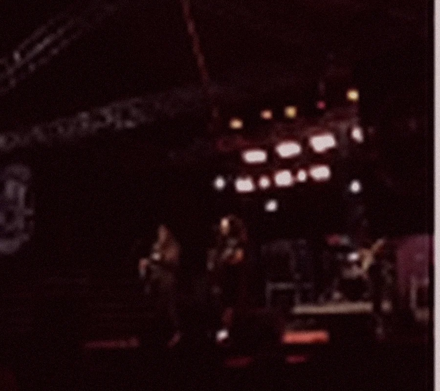

CAPÍTULO 01PLAYLIST
CIÓ
BALBINOSELEÇÃO DE CANÇÕES
BALBINOSELEÇÃO DE CANÇÕES
Canções soltas.
Uma só voz.
Uma seleção para reunir os singles e as músicas essenciais do Ció.
PLAYLIST EM PREPARAÇÃOCió Balbino / Rock & música autoral
Canções que contam histórias. Um palco que transforma tudo em encontro.
02 / DISCOGRAFIA
Singles, canções e duas leituras de um mesmo universo. A trilha sonora da história começa aqui.
Uma seleção para reunir os singles e as músicas essenciais do Ció.
PLAYLIST EM PREPARAÇÃOO primeiro mergulho
Outra forma de sentir
Reproduza aqui, sem sair do site. Os players são oficiais do Spotify.
03 / A HISTÓRIA
De Ouro Branco (MG), Ció Balbino encontrou na música uma maneira de transformar vivências em canções.
Cantor, compositor e multi-instrumentista, começou a se aproximar da música ainda na adolescência. Das primeiras bandas e apresentações aos projetos autorais, construiu uma trajetória marcada pelo pop rock, pela experimentação e pela conexão direta com o público.
Passou por formações como Jokers e Fulltime antes de aprofundar o trabalho solo. Em 2020, lançou Ponto de Luz, reunindo composições próprias e a vontade de dizer algo que permanecesse depois da última nota.
Conheça o momento atualSeleção de vídeos públicos de Ció Balbino. Escolha uma faixa para assistir.
04 / O AGORA
A força de uma composição ganha outro tamanho quando encontra uma banda. O projeto atual leva essa troca para o centro do palco.
ROCK • CONEXÃO • ENERGIA AO VIVO


Fotos temporárias recuperadas da página atual. As imagens originais em alta resolução substituirão estes recortes.
05 / NO PALCO
Cada show tem um instante impossível de repetir. Esta será a coleção desses momentos: refrões, encontros e a intensidade da estrada.
01 / PALCOTrecho de show em preparação

02 / ESTRADATrecho de show em preparação
03 / ENCONTROTrecho de show em preparação
EM BREVE: TRECHOS REAIS, REGISTROS DE FESTIVAIS E BASTIDORES.
ROCK É PRESENÇA.06 / CONTRATAÇÕES
Shows, festivais, eventos e encontros que pedem música ao vivo. Vamos conversar sobre a próxima apresentação?